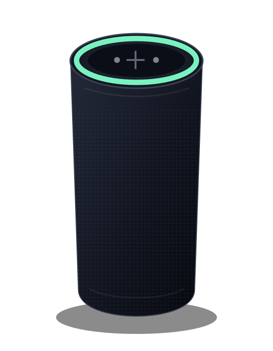
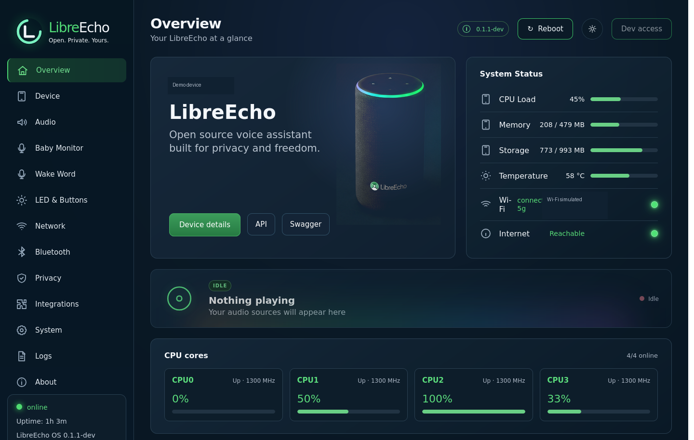
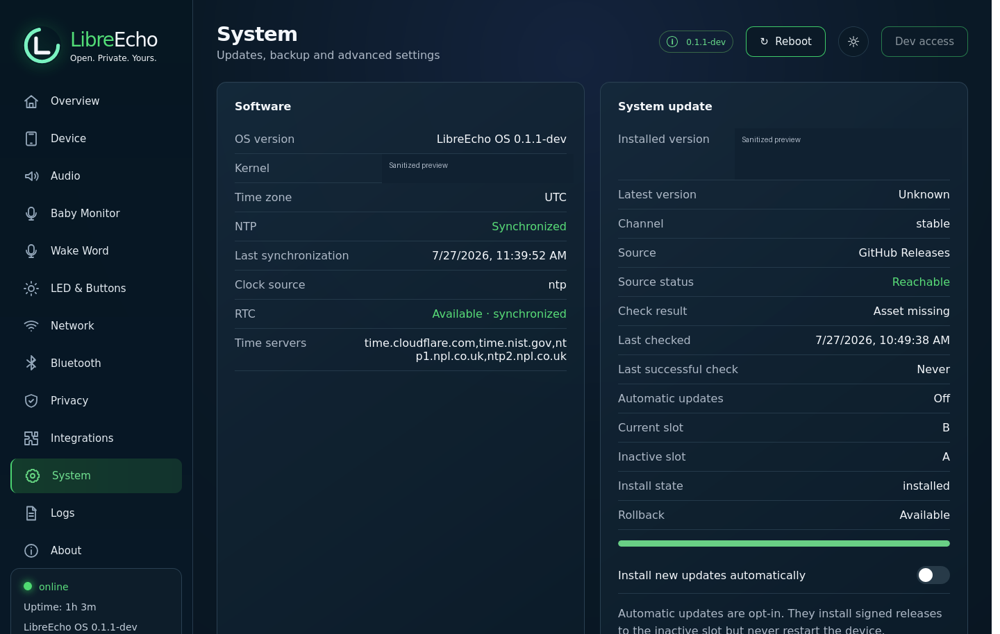
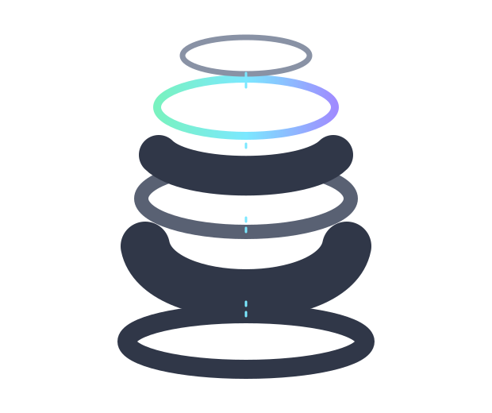

Working under hardening
Boot and recovery
The Linux 6.1 development line has a repeatable boot, recovery and A/B rollback path. Public installation remains gated on release documentation and tester validation.
Community hardware liberation project
LibreEcho is building an open operating system for Amazon Echo Gen 2—turning capable, locked-down hardware into a useful, hackable platform.
Linux 6.1 development · Developer Preview preparation
Release status: the public site is preparing a bounded Developer Preview. Open Beta has not launched, and no public download should be treated as a stable consumer release.

01 / Overview
These states describe implementation and validation separately. A working component is not automatically a beta-supported feature.
Working under hardening
The Linux 6.1 development line has a repeatable boot, recovery and A/B rollback path. Public installation remains gated on release documentation and tester validation.
Working under hardening
Association, DHCP and gateway-liveness supervision are implemented. Driver-state recovery and longer-duration acceptance remain active work.
Working under hardening
Bluetooth SDP, A2DP sink and AVRCP service paths are implemented. Client compatibility and pairing hardening remain release work.
Working under hardening
AirPlay playback is hardware-validated through the current PCM path. Stream-start volume precedence remains an open safety investigation.
02 / Features
Last reviewed . The release matrix is deliberately conservative.
| Area | Status | Public wording |
|---|---|---|
| Boot, recovery and A/B slots | Working under hardening | Validated on the development target; public installation and recovery guides are required before preview. |
| Wi-Fi association and local networking | Working under hardening | Association and gateway supervision work; prolonged recovery and driver-state issues remain open. |
| AirPlay playback | Working under hardening | Hardware playback validated; stream-start volume safety is not yet a release claim. |
| Bluetooth A2DP / AVRCP | Working under hardening | Service records and playback path exist; client pairing compatibility is still being hardened. |
| Wake word, local STT and TTS | Experimental / developer-only | Implemented development service chain; not a supported voice-quality or privacy guarantee. |
| Assistant provider integration | Experimental / developer-only | Provider choice controls what leaves the device; see the privacy section before enabling it. |
| Microphone capture and physical mute | Experimental / developer-only | Do not treat software state or a UI indicator as proof of a hardware-derived privacy boundary. |
| LED control and Web Control Centre | Working under hardening | Local UI/API and LED paths are implemented; physical-control integration remains under review. |
| Signed A/B OTA | Working under hardening | Signed update flow exists; release identity, payload identity and recovery gates remain mandatory. |
| SSH and Home Assistant | Planned | Not required for the bounded Developer Preview and not a current support promise. |
03 / Supported hardware
Initial development targets the Amazon Echo Gen 2 family on the MT8163 platform. A similar chipset, product name or enclosure does not prove compatibility.
Other Echo generations and unverified board revisions are unsupported. Hardware compatibility must be proven against the exact board and artifact, not inferred from marketing names.
04 / Install and recover
The public release page currently contains the only downloadable release inventory. The steps below are the owner-facing contract; destructive commands remain release-specific.
Confirm the supported model, host tools, cable and recovery method. Save original boot/recovery-critical state and owner-local calibration/connectivity inputs in a private, backed-up location.
Download only from the linked GitHub release. Verify the *-SHA256SUMS file and the published OTA public key before extracting or writing anything. Never use a raw image from a chat, branch or private path.
Follow the release-specific partition and slot instructions. Stop if model, partition geometry, checksum, signing identity or owner-local inputs do not match. Destructive writes must name the exact target and require explicit confirmation.
Confirm the product version, active slot, expected services, local Web UI response, read-write userdata and basic network/audio health. Do not call a device accepted from a Linux banner or ADB connection alone.
Use the signed A/B updater only for an already-running compatible image. Keep the confirmed opposite slot. If health confirmation fails, preserve logs and use the documented recovery path; do not improvise a direct fastboot write.
Include the exact public release identity, a smallest reliable reproduction and a redacted diagnostic bundle. Remove Wi-Fi secrets, provider tokens, serials, MACs, IPs, SSIDs, private paths and signing material.
Check the public release inventoryFollow the Developer Preview gate
05 / Live demo
This is a browser-local simulation. It does not connect to LibreEcho hardware, send configuration off-device or prove hardware capability.


Open the browser demoView demo source
06 / Privacy and data flow
LibreEcho can keep substantial processing on-device, but configured providers and network services can receive data. Choose integrations deliberately and treat the Web Control Centre as a local network service.
Current public wording: physical mute is not a beta-supported privacy guarantee. The end-to-end hardware-derived input, capture-disable boundary, LED state and restart behavior remain release-gate work.
Software mute, a UI label or a daemon status field must not be interpreted as proof that the microphone hardware is disconnected or that capture cannot occur.
07 / Releases and verification
Publication, host verification, hardware acceptance and beta support are different states. Do not infer one from another.
Public GitHub release
Tag: latest · published 11 August 2026 · public development release
This release is the current public asset inventory. It is not the unreleased v0.13.0-beta.1 Developer Preview contract and it is not an unrestricted Open Beta.
Assets are attached to a public GitHub release.
Checksums and source locks have been checked by the build process.
Exact-candidate runtime evidence exists privately; this is not implied by publication.
Not launched. Preview, recovery and tester gates remain open.
sha256sum -c libreecho-radar-puffin-v0.1.0-SHA256SUMSRun this in the directory containing the downloaded asset and checksum file. Stop on any mismatch.
latest is a moving GitHub release tag, not an immutable product authority. Record the release asset name and checksum used. Future beta releases must use an immutable product version and a separately labelled channel alias.
Old private candidates, device-specific manifests and owner-local firmware are not public downloads. Do not copy them into issues, releases or this site.
08 / Security and support
Public issues are for reproducible, non-sensitive bugs. Never publish credentials, exploit details, OTA keys, private diagnostics or device identifiers in an issue.
This is a volunteer Developer Preview project. There is no guaranteed response time, and direct public-Internet exposure of the device control plane is unsupported.
If GitHub does not show private advisory reporting for this repository, do not disclose the vulnerability publicly; wait for the maintainer-announced private route.
09 / Licensing
The website and LibreEcho-authored code use their stated open-source licences. That does not relicense Linux, third-party audio components, models, voices, owner-local firmware or vendor boot-chain material.
NOASSERTION into a made-up licence.Use the public Product repository as the release coordination entry point. The exact source, notices, SBOM and relink materials for a release must be requested against the release record and matched to its immutable identity.
The UI repository is currently private and is not presented here as a logged-out source download. Its public-safety and licence review is still tracked before Developer Preview publication.
Product source and release tracker10 / Developer Preview
The first cohort is bounded, technical and feedback-oriented. It is not a consumer launch.
Installation may require recovery or reflashing and can cause data loss. Read the supported-hardware, privacy, known-issues and release pages first; verify checksums; preserve owner-local inputs; and understand that experimental voice, Bluetooth, physical mute and networking behavior may change.
Participation can be paused or withdrawn without deleting the public documentation. Open Beta remains a later decision after independent installation, recovery, OTA and stability evidence.

11 / Contribute
The Product repository is the public coordination entry point. The layer map below keeps kernel, platform, UI, documentation and private release orchestration separate.